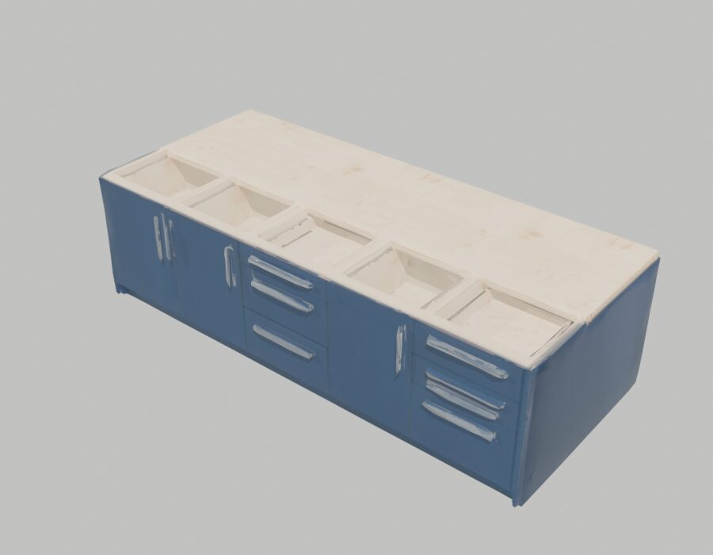
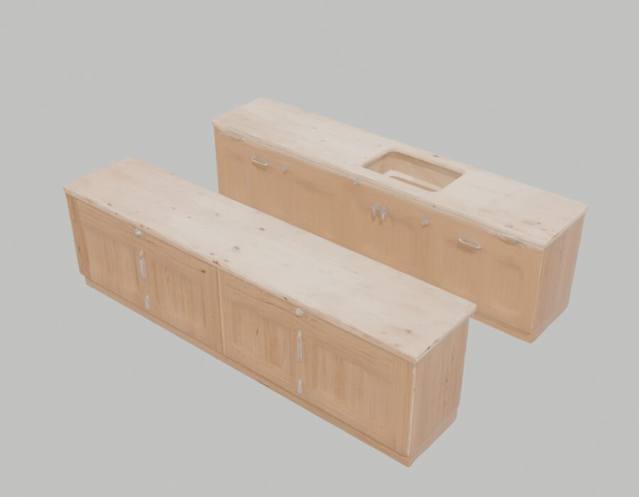
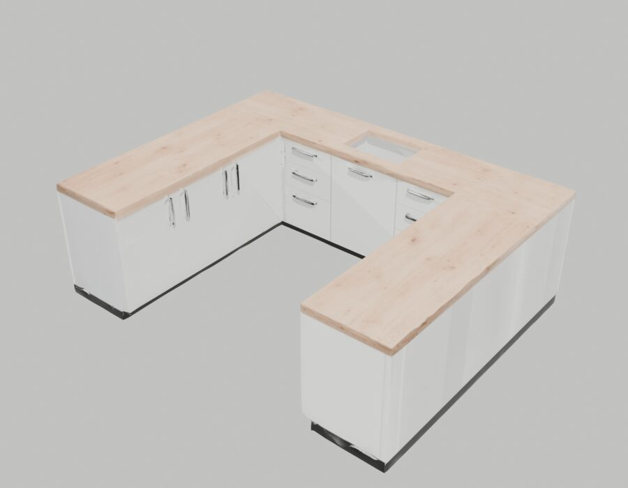
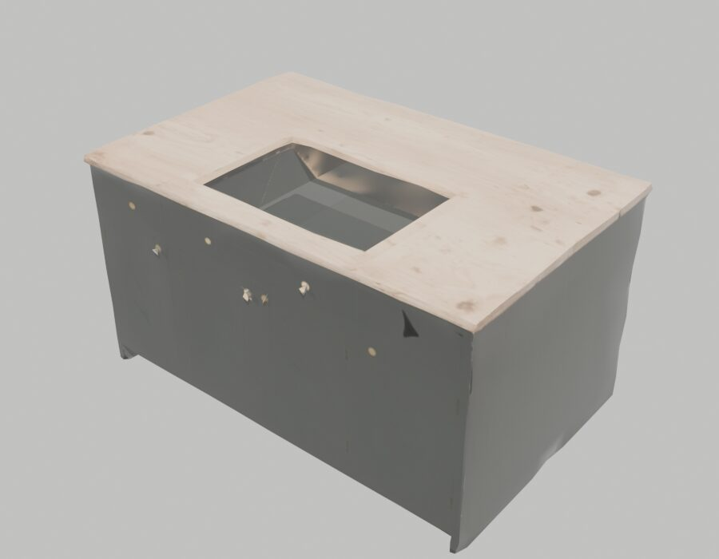
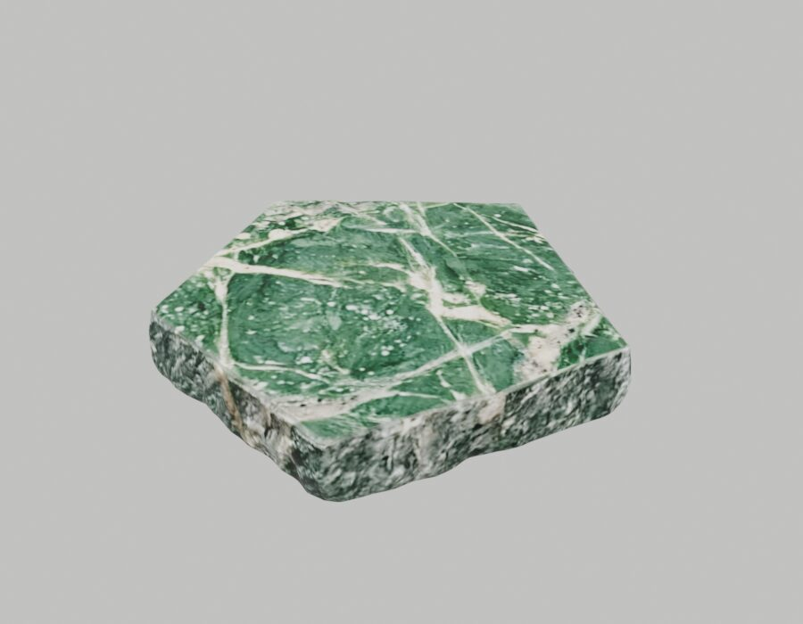
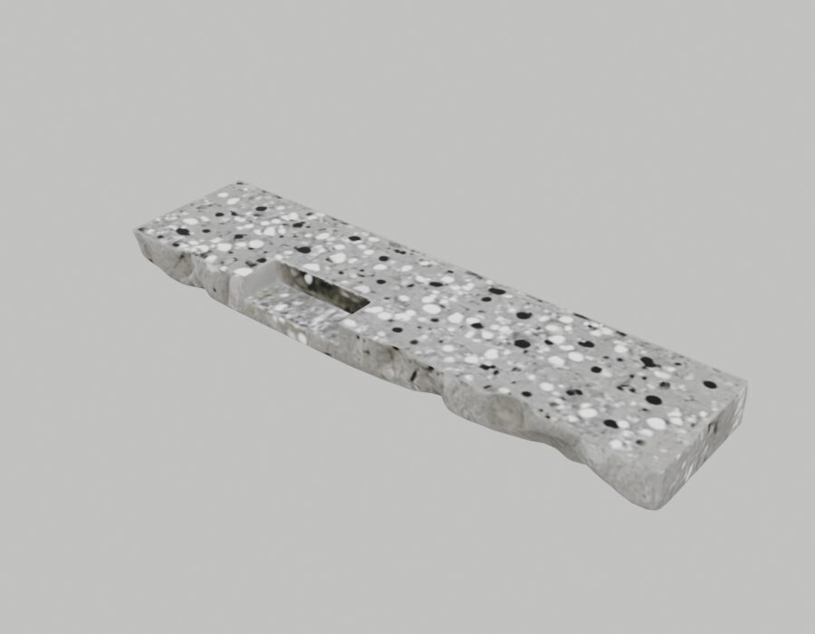
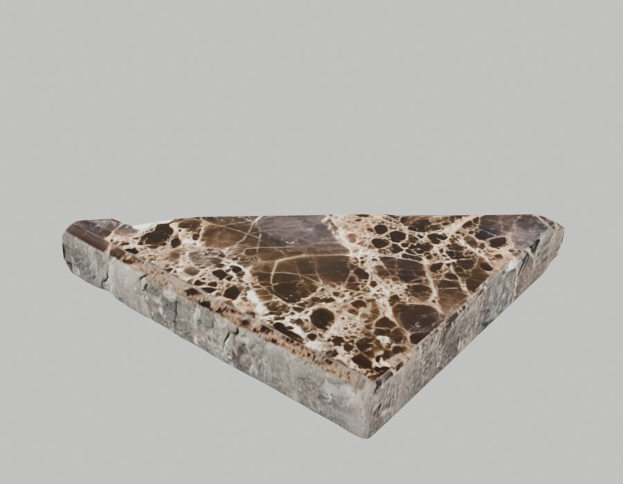

Project report, version 2 · Manycore Aholo Global 3D AI Hackathon · Team "Design Master" (Alan De Bortolo, Design Master Solutions LLC)
Play: remnant-fit-3d.designmaster.workers.dev · Code: github.com/DesignMaster-Solutions/remnant-fit-3d · Demo video: see the submission form
Stone shops cut kitchen countertops from big slabs. The leftovers (offcuts, or "remnants") pile up in the yard, and many end up in a skip because a buyer cannot picture an odd-shaped piece of marble on their own counter. I build software for stone fabricators, and "will that piece fit my kitchen?" is the question their customers ask most.
Remnant Fit 3D turns that question into a browser game: five kitchens, a yard full of offcuts, and a foreman whose plan you try to beat. Everything you place is stone that did not go to the skip.
| Area | Version 1 (30 Oct) | Version 2 (this submission) |
|---|---|---|
| Lux3D use | 4 text-to-3D tasks | 17 tasks: text-to-3D, image generation, image-to-3D and material transfer; 314 credits |
| Levels | 1 kitchen | 5 jobs, each a different generated kitchen: straight run, galley, U-shape, L with sink, island with cooktop |
| Goal | Free puzzle, no end | Beat the foreman: a planner solves each level at load time from the mesh; stars against his score; running total of kilograms kept from the skip |
| Feel | Silent | Synthesised stone knocks, saw whine, chimes; slab lifts, drops with a bounce, dust and a small camera shake; orange tiles show what the saw takes; phone vibration where supported |
| Onboarding | One hint line | A three-line intro card, a coach line that changes after the first move, toasts for saw cuts and blocked drops |
| Phone | Played, small | Camera fits counter and yard between header and footer on any screen; double tap turns a slab |
| Level reading | Ray cast per cell, 11.8 s for the L kitchen in node | Top-down triangle rasteriser, same grid, 10 ms |
| Tests | 3 unit tests | 15 node tests (rules, foreman, every level solvable) and an in-page touch test |
Every 3D object in the game is a Lux3D generation, made by lux3d/gen.py through the Lux3D API. The script creates each task, waits for tasks it depends on (an image before its image-to-3D, a swatch before its material transfer), polls, downloads, and logs every event to lux3d/gen.log. Task list and credits below come from the API's own task list.
| Asset | Lux3D capability | Task ID | Credits | Time | Used as |
|---|---|---|---|---|---|
| remnant-a, -b, -c | Text-to-3D G1 | 4502786, 4502793, 4502801 | 60 | ~3 min | Calacatta, Absolute black, travertine offcuts (Version 1) |
| kitchen | Text-to-3D G1 | 4502808 | 20 | 3.7 min | Job 4, L with sink (Version 1) |
| kitchen-run | Text-to-3D G1 | 4591991 | 20 | 5.4 min | Job 1, straight run |
| kitchen-galley | Text-to-3D G1 | 4591998 | 20 | 4.3 min | Job 2, galley |
| kitchen-u | Text-to-3D G1 | 4592004 | 20 | 4.7 min | Job 3, U-shape |
| kitchen-island | Text-to-3D G1 | 4592013 | 20 | 5.6 min | Job 5, island with cooktop |
| kitchen-u-ref | Multimodal image | 4592024 | 12 | 27 s | Input photo for image-to-3D |
| kitchen-u-img | Image-to-3D G1 | 4592044 | 20 | 5.4 min | Comparison against text-to-3D (section 4) |
| remnant-d, -e, -f | Text-to-3D G1 | 4592094, 4592155, 4592160 | 60 | ~3.2 min | Verde quartzite, terrazzo, Emperador offcuts |
| swatch-azul, swatch-rosa | Multimodal image | 4592104, 4592200 | 24 | 32 to 50 s | Stone swatches for material transfer |
| remnant-azul, -rosa | Material transfer v3.0 | 4592170, 4592219 | 38 | 3.3 to 5 min | Azul Bahia and Rosa Portogallo offcuts on the Calacatta mesh |
| 17 tasks | 314 | 0 failed |







Raw renders of the downloaded meshes (Blender, report/render.py), before any processing.
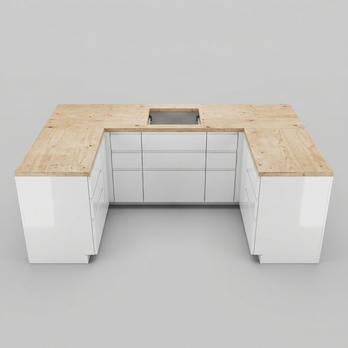
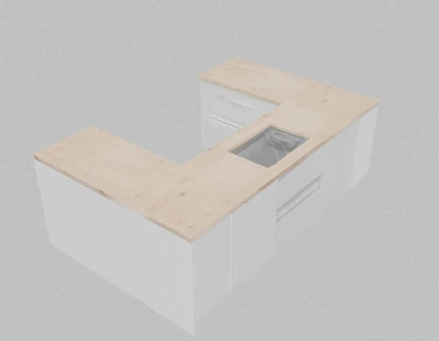
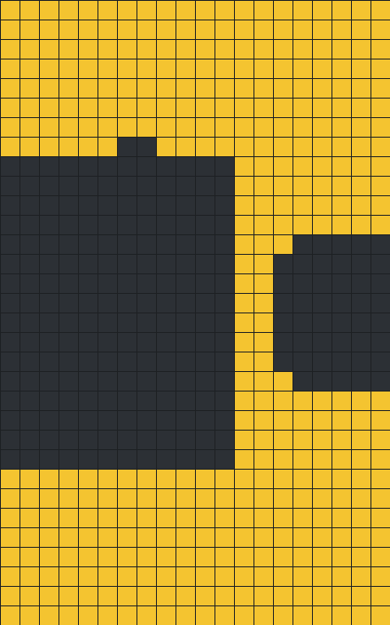
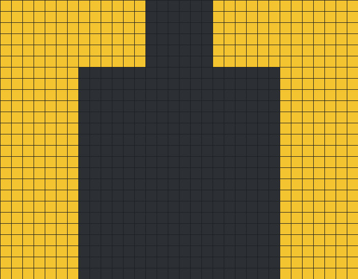
The image route gave the nicer-looking model, but read from above it had a one-cell gap across a run and a jagged sink outline. A puzzle on a 10 cm grid needs clean edges, so job 3 uses the text-to-3D kitchen and the image-to-3D one stays in the repository as the comparison.

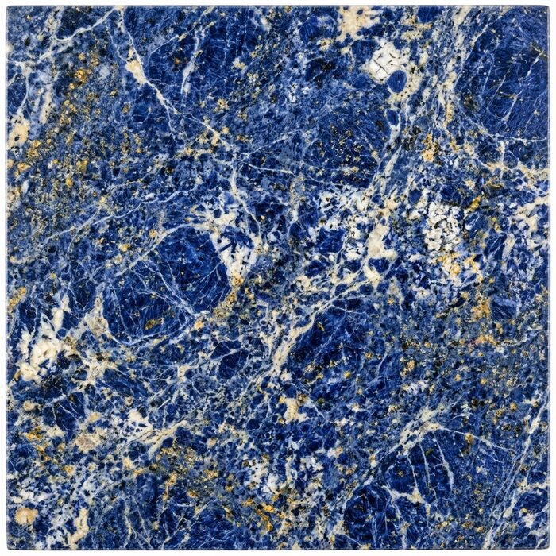
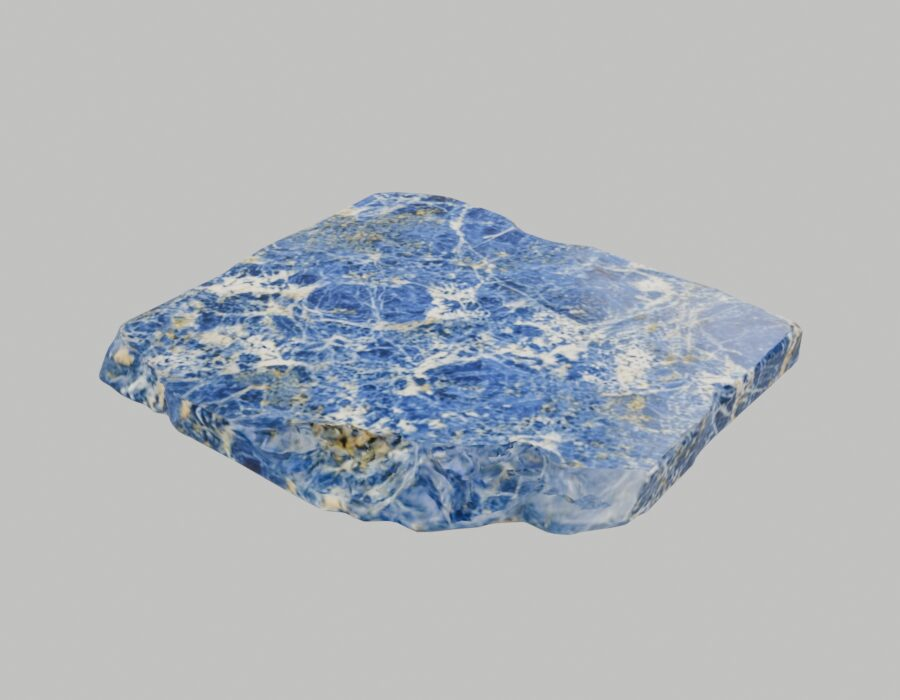
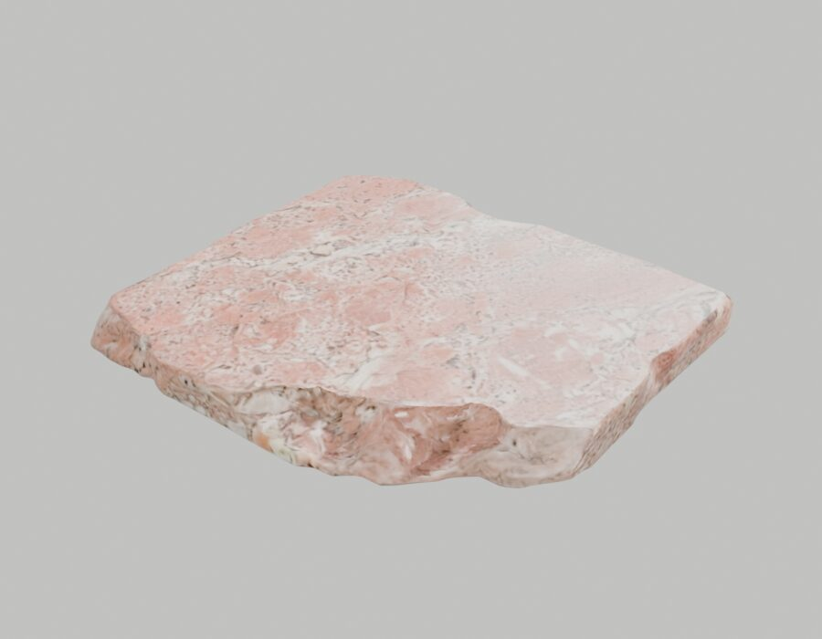
Material transfer kept the exact outline of the Calacatta mesh and repainted it from a generated swatch. In a real yard the same cut shape shows up in many stones, and this is how the game adds stones cheaply.
| Asset | Asked for | Got | Decision |
|---|---|---|---|
| remnant-e | Terrazzo strip with a rectangular notch | A straight strip, the notch only a shallow recess | Kept: long strips are what galley runs need |
| kitchen-run | Plain straight run, bare top | Bar handles rising to top height and small recesses | The reader drops anything one cell wide (a 2x2 opening) and patches under 20 cells |
| kitchen-u-img | U kitchen from a photo | False gap and ragged sink in the top view | Comparison only, see above |
There is no hand-made level data. On load the game stands each kitchen at 0.9 m, scales its longest run to a stated length, and rasterises every triangle seen from above onto a 10 cm grid, keeping the highest surface per cell. Cells at the top level are counter; the sink, the cooktop hole and the floor drop out. Slabs are laid flat and read the same way. The fitting rules live in public/fit.js, the reader in public/mesh-grid.js, and the node tests load the same GLB files through the same code, so the game and the tests see one truth. A new Lux3D kitchen is a new level: public/levels.js only names the model, its length and the yard stock.
Each job is a client brief and a yard. Drag offcuts onto the yellow outline, turn them (button, R key, or double tap), and finish the job when you are happy. Two slabs cannot overlap; overhang past the counter or over a hole is legal but sawn off and shown in orange; every edge where two slabs meet is a seam. Score = cover % minus 10 per m² sawn off minus 5 per metre of seam.
The foreman is a greedy planner (foreman() in public/fit.js): biggest slab first, each at the spot and turn that adds the most score. His score on the current level is the bar: 70% of it earns one star, 90% two, matching or beating him three. Finishing reports kilograms kept from the skip, kilograms sawn off, and the new stone that would still be needed, and adds to a running total across the five kitchens. Weights use 3 cm stone at 2.7 t/m³ (81 kg per m²), an assumption stated in the game, not a measured yard figure.
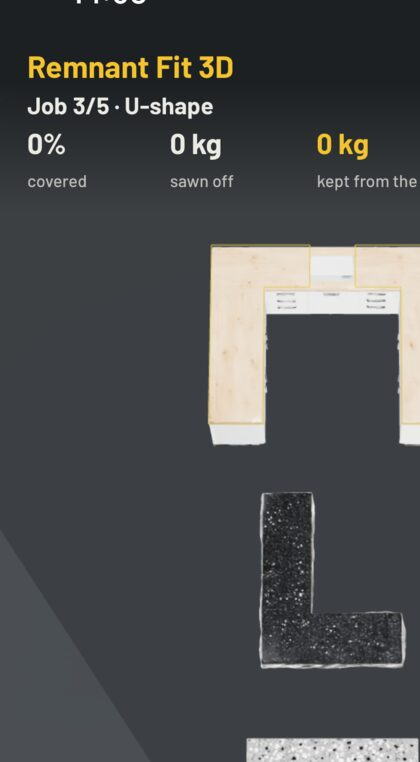

| Job | Kitchen | Counter | Foreman cover | Sawn off | Seams | Foreman score |
|---|---|---|---|---|---|---|
| 1 | Straight run | 1.70 m² | 100% | 0.95 m² | 1.4 m | 84 |
| 2 | Galley | 3.18 m² | 93% | 1.09 m² | 0.0 m | 82 |
| 3 | U-shape | 4.22 m² | 93% | 1.68 m² | 0.4 m | 74 |
| 4 | L with sink | 5.83 m² | 85% | 1.29 m² | 0.4 m | 70 |
| 5 | Island with cooktop | 3.49 m² | 97% | 2.43 m² | 0.8 m | 69 |
Printed by npm test. I tuned the yard sizes until the first job was forgiving and the jobs got harder in order; the foreman is greedy, so a careful player can beat him.
npm test): rotation, overlap, scoring, the foreman (no overlaps, turns when it must, leaves useless slabs in the yard), stars, job result, the handle filter, every level read from its real GLB and covered at least 80% by the foreman, and the v2 reader giving the same grids as the v1 ray caster (583 and 197 cells). Each new test was seen failing before the code that passes it.?selftest, public/selftest.js) through the game's own pointer handlers, run in WebKit on the iOS Simulator: drag places a slab, a slab dropped on another goes back to the yard, turn, start over, the foreman's plan laid by hand scores 84 vs 84 and earns three stars, next job loads.video/director.js), and the soundtrack is the game's own synth rendered offline from the recorded events (video/soundtrack.mjs).Each counter covered with offcuts is stone that is sold instead of thrown away. The pipeline in this game (describe or photograph an offcut, generate it with Lux3D, read its outline from the mesh, try it on a generated kitchen) is the tool a stone shop needs to put its yard online and let customers try a piece on their own kitchen before they buy it.